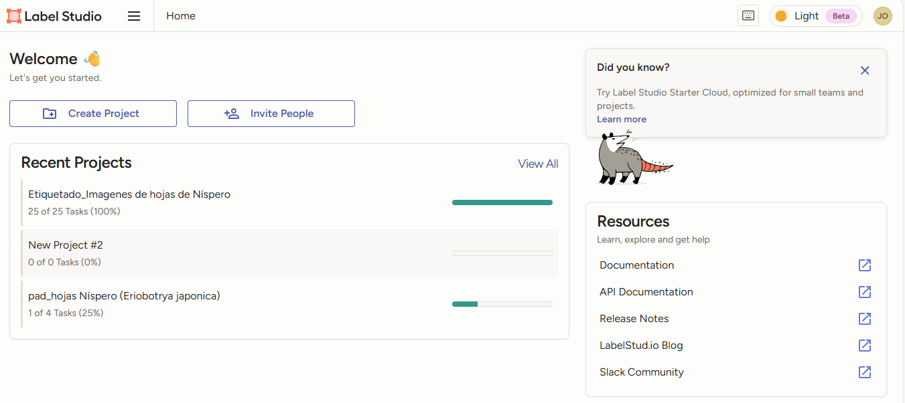
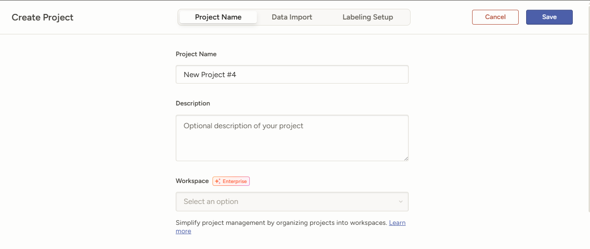
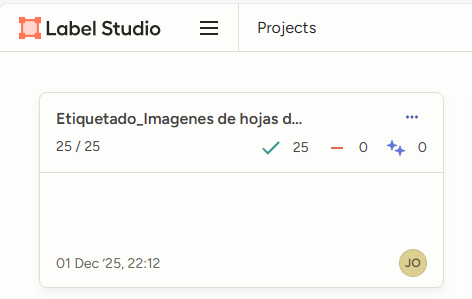
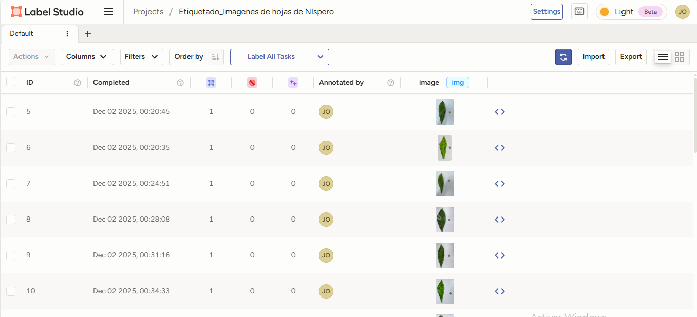
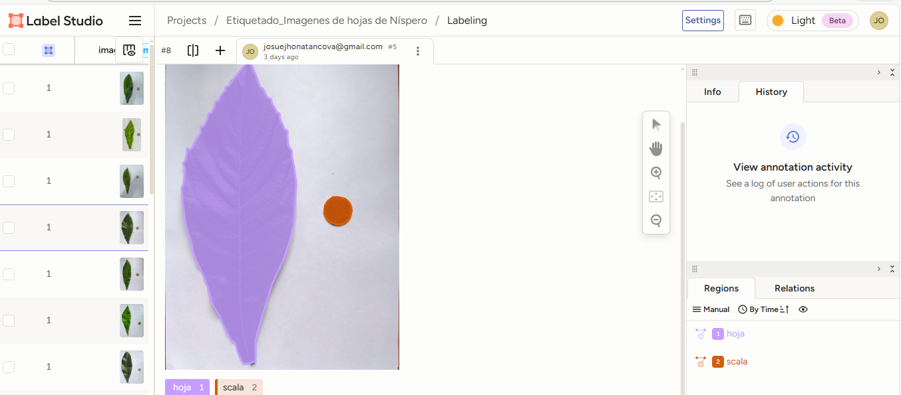
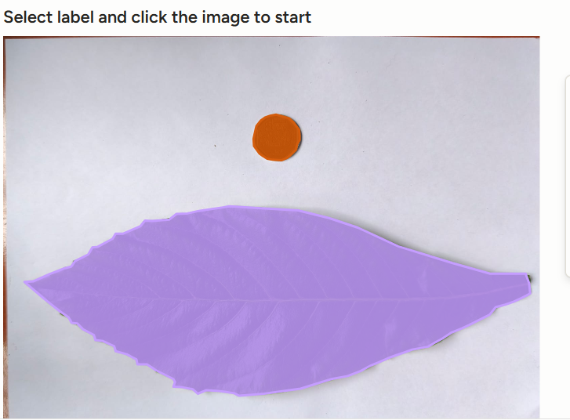

“Anotación de Imágenes de Hojas de Níspero con Label Studio.
1 INTEGRANTES G3
- COLUNCHE VASQUEZ JOSUE JHONATAN
- SANCHEZ ALVARADO RUBEN
- RAMOS BRICEÑO IVAN
- TOMAPASCA LÓPEZ FRANK
- DELGADO GOMEZ MARK ANTHONY
- CUBAS FERNANDEZ MIKEY DIDU
2 INTRODUCCIÓN

3 OBJETIVOS
3.1 General


Explicar el proceso de anotación de imágenes utilizando Label Studio, aplicándolo a un conjunto de imágenes de hojas de níspero (Eriobotrya japonica) para su posterior uso en análisis y proyectos de visión computacional.
3.2 Específicos


Describir el funcionamiento general de Label Studio como plataforma de anotación de imágenes.
Importar y organizar un conjunto de imágenes de hojas de níspero dentro de Label Studio para su análisis.
Diseñar y configurar la interfaz de anotación para identificar, resaltar o delimitar características morfológicas de las hojas.
Explicar paso a paso el proceso de anotación de imágenes, incluyendo selección de herramientas, tipos de etiquetas y registro de metadatos.
Generar anotaciones precisas y consistentes que conformen un dataset estructurado y adecuado para análisis posteriores.
Exportar los datos anotados en formatos útiles para programación y ciencia de datos.
4 MARCO TEÓRICO
4.1 ¿Qué es Anaconda?

Anaconda Python es la herramienta ideal para gestionar y desarrollar proyectos en Python. Con Anaconda Python, los programadores tienen acceso a un entorno de desarrollo integrado (IDE) que les permite escribir, depurar y ejecutar código Python de manera eficiente (JMJ Informático, s.f.).
Anaconda ofrece una distribución de Python (y R) pensada para la computación científica, facilitando considerablemente la configuración de un entorno adecuado para investigación y análisis de datos (Rolon-Mérette et al., 2020).Esa distribución incluye un gestor de paquetes y entornos, conda, que simplifica la instalación, actualización y administración de bibliotecas y dependencias necesarias. (Rolon-Mérette et al., 2020)
Asimismo, la instalación básica de Anaconda ya trae incorporadas numerosas librerías científicas — tales como librerías de cálculo, análisis de datos y visores — lo que permite al investigador comenzar a trabajar de inmediato sin tener que instalar manualmente decenas de paquetes. (Descripciones de la distribución de Anaconda)
Además, Anaconda facilita la creación de entornos aislados, lo que ayuda a mantener consistencia en los proyectos, evitar conflictos de versiones y garantizar reproducibilidad — algo fundamental cuando los proyectos se comparten o migran entre distintos sistemas o colaboradores. (Rolon-Mérette et al., 2020; gestión de entornos con conda) TQMP +1 Por todos estos motivos, Anaconda aparece como una herramienta integral y conveniente para el desarrollo de proyectos en Python orientados a la investigación, ciencia de datos o cómputo científico, ofreciendo un entorno listo para trabajar, con control de dependencias y fácil administración. (Resumen de las ventajas de Anaconda).
4.2 Ejemplos de su aplicación en la agricultura
- Análisis de datos agrícolas
- Monitoreo de cultivos
- Agricultura de precisión
- Modelado y predicción de clima
- Gestión de recursos
4.3 ¿Qué es Label Studio?

Label Studio es una plataforma de código abierto diseñada para la anotación de datos multimodales, que permite crear conjuntos de entrenamiento de alta calidad para modelos de inteligencia artificial mediante interfaces configurables y herramientas de apoyo al etiquetado (Heartex, s.f.). En el ámbito agrícola, su uso resulta especialmente valioso porque se integra con enfoques de label-efficient learning, los cuales permiten entrenar modelos para clasificación de enfermedades, reconocimiento de malezas y análisis de cultivos aun cuando se dispone de pocos datos etiquetados, reduciendo los costos de anotación manual (Zhang et al., 2023). Asimismo, Label Studio es ampliamente utilizado en investigaciones científicas de diversas disciplinas, donde funciona como un motor flexible para la anotación estructurada y reproducible de imágenes y otros tipos de datos, favoreciendo procesos avanzados de clasificación y análisis (Singh et al., 2023).
4.3.1 Características principales:
Soporta múltiples tipos de datos: Imágenes, texto, audio, video y más.
Interfaz personalizable: Los usuarios pueden crear sus propios flujos de trabajo y definir el tipo de anotación que se requiere (por ejemplo, etiquetar objetos en una imagen, o clasificar texto).
Integración con modelos de aprendizaje automático: Se puede conectar con modelos preexistentes para realizar anotaciones automáticas y luego corregirlas manualmente.
Gestión de equipos: Permite trabajar en equipo, asignar tareas a diferentes personas y realizar un seguimiento del progreso.
Instalación:
Label Studio se puede instalar en un servidor local o ejecutarse en la nube. La instalación local se puede hacer usando el paquete con pip: Copiar código : pip install label-studio
Cómo iniciar Label-Studio:
- Abrir el terminal de Anaconda Prompt
2.Instalar e iniciar
En el terminal ejecutamps los siguentes codigos, paso por paso:
- conda create -n labelstudio_env python=3.10
- conda activate labelstudio_env
- pip install label-studio
- label-studio
-Consideracion adicional: para cuardar todo lo que trabajas en labelstudio en el terminal das control c, y se guarda tu proyecto.Si cierras tu termial para iniciar nuevamente a tu proyecto ejecutas el comand “label-studio” y nuevamente sigues trabajando.

Al ejecutar estos códigos te manda la servidor y lo viculas con tu correo o cuenta si ya tienes.

- Creación de un Proyecto:
Después de instalar Label Studio, puede iniciar la aplicación con el siguiente comando: Copiar código :label-studio
Esto abrirá la aplicación en un navegador web donde puedes crear un nuevo proyecto. Un proyecto en Label Studio consiste en una colección de datos que vas a etiquetar.

- Configuración del tipo de etiquetado:
Cuando creas un proyecto, puedes definir qué tipo de tarea de etiquetado necesitas. Algunos ejemplos comunes son:
a) Clasificación de imágenes: donde se asignan etiquetas a las imágenes (por ejemplo, “perro”, “gato”).
b) Detección de objetos: donde se dibujan cuadros alrededor de objetos dentro de una imagen.
c) Segmentación de imágenes: donde se etiquetan áreas específicas dentro de la imagen, útiles en tareas de visión por computadora.
- Subir Datos:
Los datos (imágenes, audios, textos, vídeos, etc.) se cargan al proyecto. Puedes subir tus archivos desde tu computadora o importarlos desde un servidor o almacenamiento en la nube.
- Etiqueta de datos:
Una vez que los datos estén cargados, puedes comenzar a etiquetar. La interfaz de usuario de Label Studio es bastante intuitiva y permite a los usuarios seleccionar y etiquetar con facilidad. Si estás etiquetando imágenes, por ejemplo, puedes dibujar cuadros o polígonos alrededor de los objetos que quieres identificar y asignarles etiquetas específicas.
- Revisión y Exportación:
Después de realizar el etiquetado, el trabajo puede ser revisado por otros miembros del equipo (si se está trabajando en grupo). Los datos anotados pueden luego ser exportados en varios formatos, como JSON o CSV, para ser utilizados en el entrenamiento de modelos de Machine Learning.
5 DATA ADICIONAL
5.1 Base datos area, ancho y alto
5.2 Recolección y preparación de las imágenes
Se recolectaron hojas de níspero (Eriobotrya japonica) en diferentes estados morfológicos para asegurar variabilidad dentro del dataset.
Las hojas se fotografiaron sobre un fondo uniforme para facilitar su identificación en el proceso de anotación.
Las imágenes fueron guardadas en formato PNG, compatibles con Label Studio.

https://docs.google.com/document/d/1hURhnhOa9-l2D2A5M6_KLxyzQZK8sHNOtXgtDTQrhC8/edit?tab=t.0
6 METODOLOGÍA
6.1 Proceso de anotación de imágenes utilizando Label Studio, aplicándolo a un conjunto de imágenes de hojas de níspero (Eriobotrya japonica)
La metodología empleada en este trabajo se desarrolló en cuatro etapas principales: preparación del material visual, configuración de la plataforma, proceso de anotación y exportación de datos. Cada fase se realizó con el objetivo de explicar de manera detallada el funcionamiento de Label Studio para la anotación de imágenes en proyectos de análisis de datos.
6.2 Crear un proyecto: Llamado “Etiquetado_Imagenes de hojas de Níspero”.

6.3 Subir imágenes: Imágenes de las hojas de Níspero

6.4 Definir tareas de etiquetado:
Definimos las categorias en nuestro caso es ” hoja y moneda”
6.5 Etiquetado
Primero seleccione la etiqueta para comenzar a dibujar alrededor de las imágenes haciendo puntos.

6.6 Revisión: El etiquetado se revisa y ajusta según sea necesario

Este proceso es sencillo pero sumamente poderoso, ya que permite estructurar y etiquetar la información de forma precisa. Se trata de una etapa esencial para crear datasets de alta calidad, los cuales son indispensables para entrenar, validar y optimizar modelos de inteligencia artificial. Una buena anotación no solo mejora el rendimiento del modelo, sino que también reduce errores, incrementa la capacidad de generalización y facilita el desarrollo de soluciones más robustas en diversos campos de aplicació
Se guardó la plantilla XML generada automáticamente por la plataforma.
6.7 Proceso de anotación de imágenes
Cada imagen fue visualizada de manera individual dentro del entorno de Label Studio.
Se seleccionó la herramienta de anotación necesaria según la característica que se deseaba delimitar (polígono).
Se explicó el procedimiento paso a paso para marcar los elementos de interés.
Para cada anotación se asignó la etiqueta correspondiente y se verificó su precisión antes de continuar con la siguiente imagen.
Todo el proceso fue documentado para facilitar su explicación en el informe.
6.8 Exportación y organización de los datos anotados
Una vez completada la anotación del conjunto de imágenes, se utilizó la opción de Export en Label Studio.
Los datos se exportaron en formatos compatibles con análisis posterior, como YOLO whith images con el nombre “Etiquetado”.
Repositorio :
7 RESULTADOS
https://drive.google.com/drive/folders/12Rem_kDRw9Jcc2BgpgRblGLQz2I9FndM?usp=sharing
8 CONCLUSIONES
La anotación de imágenes realizada con Label Studio sobre el conjunto de hojas de níspero (Eriobotrya japonica) demuestra cómo un flujo de trabajo estructurado y reproducible mejora la calidad de los datos para proyectos de visión por computadora y análisis agronómico. Mediante la definición clara de etiquetas (Hoja y Escala), el uso de polígonos para delimitar contornos y la vinculación explícita entre escala y hoja, se generó un dataset consistente que facilita medidas cuantitativas (área, largo, ancho) al convertir píxeles a unidades reales usando la moneda como referencia. La configuración del proyecto, la documentación del proceso de anotación y la exportación en formatos compatibles (JSON / YOLO, entre otros) aseguran interoperabilidad con herramientas de programación y modelos de aprendizaje automático.
Además, el procedimiento aplicado permite detectar y corregir sesgos en la recolección de imágenes (iluminación, fondo, orientación) y estandarizar metadatos, lo que incrementa la fiabilidad de análisis posteriores como clasificación de daños o estimación de biomasa foliar. En resumen, el uso de Label Studio en este trabajo no solo facilita la creación de anotaciones precisas sino que también habilita el desarrollo de modelos predictivos útiles para la agricultura de precisión.
9 REFERENCIAS
Rolon-Mérette, D., Ross, M., Rolon-Mérette, T., & Church, K. (2020). Introduction to Anaconda and Python: Installation and setup. The Quantitative Methods for Psychology, 16(5), S3–S11. https://doi.org/10.20982/TQMP.16.5.S003
JMJ Informático. (s.f.). Anaconda Python: ¿Qué es y cómo utilizar este potente entorno de programación? JMJ Informático. https://jmjinformatico.es/que-es-anaconda-python/
Heartex. (s.f.). Label Studio: Open source data labeling tool. https://labelstud.io/
Zhang, H., Zhang, Z., Shou, Y., Chen, X., & Song, Y. (2023). A survey on label-efficient learning. arXiv. https://arxiv.org/abs/2305.14691
Singh, H., Nguyen, T., & De Brabandere, B. (2023). Latent space geometry for multi-label classification. arXiv. https://arxiv.org/abs/2302.14468